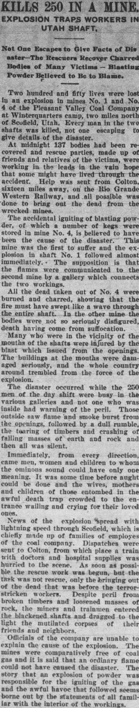

HN HN-322 · May 5, 1900 · Disasters, Accidents & Emergencies > Explosions, Industrial & Workplace Disasters > Mine disasters
Source: Jasper County Democrat, p. 2 — original page; Utah state history; Utah State Archives mine-inspector records.
Report: The newspaper described the explosion in the Winter Quarters No. 1 and No. 4 mines at Scofield, Utah, claiming 250 men had died, with 137 bodies recovered as of one report. Relatives volunteered for rescue work after a blast that left little firsthand evidence of its cause.
Assessment: The May 1 disaster was real, but Utah historical sources commonly document at least 200 deaths, rather than accepting the article's 250 as a settled figure. Later counts vary by the records included; ignition theories are not established by this first dispatch.
Authentic images retrieved from Hoosier State Chronicles (Indiana State Library). Article crops are located using the archive's own OCR word coordinates and rendered at native crop resolution; article clips are assembled from the archive's own article-block images; page images marked "archive tiles" are stitched from the archive's own tiled page service at its 256-px tile cap; page images marked "issue PDF" are single pages rasterised from the archive's own issue PDF, with the page chosen by matching the headline against the PDF's text layer; page scans are reduced-size access renditions. No images were generated, mocked, or retouched.

Not yet acquired. Queued for provider-specific acquisition testing (see source-acquisition manifest).
URL (preserved verbatim): https://newspapers.library.in.gov/?a=d&d=JCDC19000505.2.89
Saved research report: Historical_Newspaper_Event_Research_303-327_2026-10-23.md
Evidence note: A newspaper report means a historical publication made a claim; it does not establish that claim as fact. Contemporary reporting is separated from later scholarly context and our own assessment.